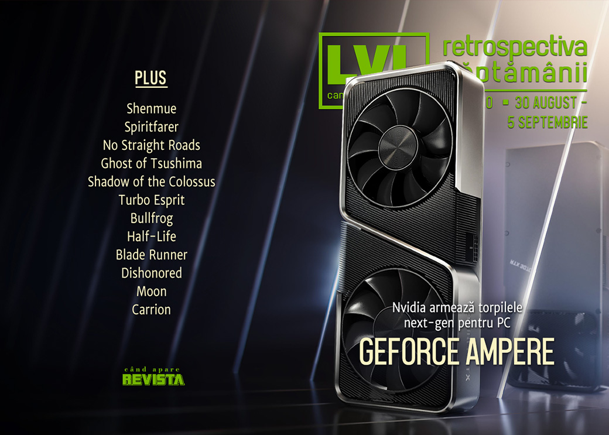

Retrospectiva săptămânii 30 august - 5 septembrie 2020
Nvidia prezintă seria 30 de procesoare grafice, cu performanțe duble față de actualele plăci RTX 2080 Ti, Intel dezvăluie generația 11 de procesoare, iar studioul Vlambeer se desființează după 10 ani, iar jocul multiplayer românesc Raiders Of The Lost Island a ieșit din early access.
Linkuri rapide:
- Știri
- Articole (critică, dev, design)
- Made în România
- Anunțuri şi lansări de jocuri
- Prăvălii de jocuri

Știri
Nvidia a dezvăluit seria 30 de procesoare grafice, construite pe o arhitectură nouă (Ampere), ce promite performanțe cel puțin duble față de actualul vârf de gamă, 2080 Ti, la prețuri mult mai mici. (PC Gamer, Gizmodo, Hardcore Gamer, Eurogamer, Destructoid) În plus, noua serie aduce și o tehnologie nouă, RTX IO, care permite procesorului grafic să proceseze date direct de pe SSD, fără a mai trece prin CPU, o arhitectură similară cu ce oferă viitorul PlayStation 5. (PC Gamer, DSOGaming)
Intel au prezentat seria de procesoare pentru laptop din cea mai recentă generație (a 11-a, denumită Tiger Lake), ce vin, printre altele, cu procesare grafică integrată. (RPS, PCMAG)
Vom avea un serial animat Shenmue. (Eurogamer, RPS, Destructoid)
Studioul Vlambeer (Nuclear Throne, Luftrausers) se închide cu ocazia aniversării a 10 ani, cei doi fondatori anunțându-și dorința de a explora și alte oportunități pe cont propriu. (Kotaku, VideoGamesChronicle, RPS, Eurogamer)
Studioul Lab Zero Games, aflați în centrul unui scandal încă de săptămâna trecută când mai mulți angajați și-au dat demisia, a concediat și restul angajaților care mai rămăsesră la studio. (PC Gamer, GamesIndustry.biz, Gamasutra)
Articole (critică, dev, design)
- Remember how great ASCII art used to be in game guides? (RPS)
- The terrible and anti-competitive state of sports video game franchises (Shacknews)
- The fall guys: why big multiplayer games almost always collapse at launch (The Guardian)
- Why Online Multiplayer Isn’t So Social (Uppercut)
- How Games, Tech, and the Army Use Progressive Language as a Smoke Screen (Vice)
- This Is The Golden Age Of Superhero Gaming (Liftoff!)
Actualitate
Not-a-review
- Spiritfarer Turns Hugging into a Crucial and Beautiful Game Mechanic (Escapist)
- 'Spiritfarer,' A Game of Hugging and Letting Go, Is Perfect For Right Now (Vice)
- No Straight Roads: Rock Will Never Die (Unwinnable)
- Specter of Aesthetic Play (Unwinnable)
- Shadow of the Colossus and the Lesson of Grief (Escapist)
Industrie
- Epic Games vs. Apple – the legal issues (GamesIndustry.biz)
- The DeanBeat: Apple must tread carefully lest it trample the game industry (VentureBeat)
- That’s time gentlemen, please: Lair of the Clockwork God ‘a nice swansong’ for Ben and Dan (Thumbsticks) —
Istorie, retrospectivă
- The making of Turbo Esprit, the Spectrum game set in Romford that predated GTA (Eurogamer)
- Bullfrog after Populous (The Digital Antiquarian)
- 22 years later, Half-Life’s influence is still being felt (PC Gamer)
- Westwood’s Blade Runner Returns to a Generation Headed Towards Its Future (Uppercut)
- Dishonored (Critical Distance)
- World building (Kimimi The Game-Eating She-Monster)
Dev, making of, mecanici
- Video Game "Walk Cycles" Are Just The Best (Kotaku)
- Dynamic Map Elements in RTS Games (Wayward Strategy)
- A Game Without Killing: The Story of Moon's 22-Year Journey to Leave Japan (Vice)
- Carrion game/level designer Krzysztof Chomicki on managing amorphousness, gravity and screams (Game World Observer)
Design, world-building, artă
- Game Art: Olavo Ekman’s Colors Fade (2020) (Gamescenes)
- Game Art: Pete Rowbottom’s Death Stranding Photography (2020) (Gamescenes)
Made în România
- Raiders Of The Lost Island a ieșit din early access. (Steam)
Anunţuri şi lansări de jocuri
- Ubisoft’s renamed Gods & Monsters has seemingly been revealed (VideoGamesChronicle)
- Hello Games are working on another “huge, ambitious game like No Man’s Sky” (RPS)
Anunţate
- Regiments (Kotaku)
- Blood Bowl 3 (EGM)
- Graven, succesor spiritual pentru Hexen 2 (Eurogamer, PC Gamer)
Acum cu dată de lansare
- Welcome to Elk: 17 septembrie (Eurogamer)
- Rebel Galaxy Outlaw vine și pe Steam: 22 septembrie (RPS)
- Pendragon: 22 septembrie (RPS)
- Art of Rally: 23 septembrie (PC Gamer)
- Spelunky 2: 29 septembrie (PC Gamer)
Lansate
- 1 septembrie: Crusader Kings III (Steam)
- 2 septembrie: Raiders Of The Lost Island (iese din early access) (Steam)
- 1 septembrie: Iron Harvest (Steam, gog.com)
- 3 septembrie: Spellbreak (Epic Store)
- 3 septembrie: Diabotical (Epic Store)
- 3 septembrie: ULTRAKILL (early access) (Steam)
- 3 septembrie: Total War: Three Kingdoms – The Furious Wild (Steam)
- 3 septembrie: Spinch (Steam, gog.com)
- 4 septembrie: Tony Hawk’s Pro Skater 1+2 (Epic Store)
- 4 septembrie: NBA 2K1 (Steam)
- 4 septembrie: Marvel’s Avengers (Steam)
- 4 septembrie: Paradise Killer (Steam, gog.com)
Prăvălii de jocuri
Update catalog
- PlayStation Now has added Resident Evil 7 and Final Fantasy XV (VideoGamesChronicle)
- New Xbox Game Pass titles for console and PC announced (VideoGamesChronicle)
Jocuri gratis și free weekends
- The Division is free for keeps on Uplay this week (RPS)
- Into the Breach, Spellbreak and Diabotical are available for free on Epic Games Store (DSOGaming)
- Lianthus Is a Free Foray into an Enigmatic and Dangerous Forest (Escapist)
Reduceri și promoții
- Get PC Building Simulator, Elite: Dangerous, and more in the new Humble Bundle (PC Gamer)
- Weekend PC Download Deals for Sept. 4: New Humble Choice picks (Shacknews)
Retrospectiva săptămânii este rubrica duminicală în care trecem în revistă evenimentele săptămânii de pe frontul de gaming: știri şi articole (scrise de alții, bineînțeles, că e mai ușor aşa), industrie, lansări, oferte de jocuri, toate numai de savurat la cafeaua de duminică dimineața.
De asemenea, rubrica e deschisă oricui vrea și poate contribui. Dacă ai citit vreun articol sau vreo știre interesantă și crezi că merită incluse în retrospectiva săptămânii, te așteptăm pe forum pe unul dintre topicurile dedicate: Știri, Articole, Gaming România].